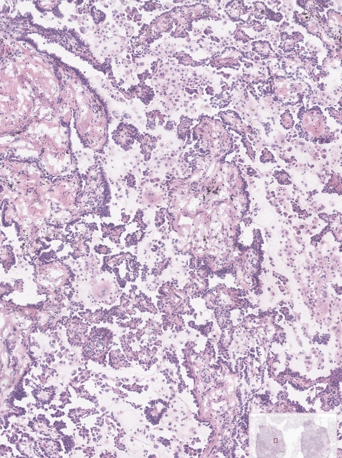
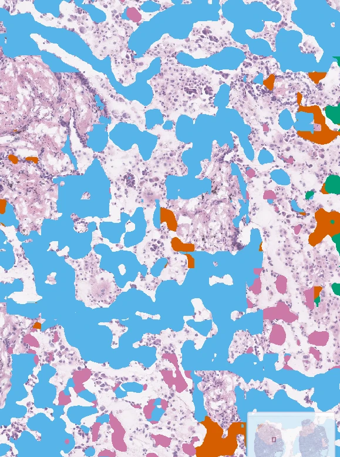
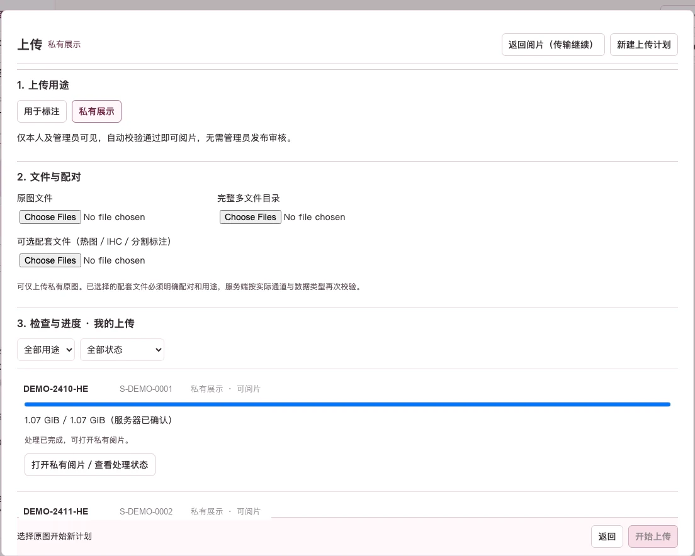

用于标注
进入协作与分配
后台校验→
管理员审核与分配→
标注工作
适合需要多人协作、统一类别与版本管理的切片。
BRIGHT · 病理阅片与标注工作台
BRIGHT 把阅片、对照、结果图层、结构化标注与团队管理放在同一套界面里。少一次切换，多一层可回看的上下文。
01 / 阅片与对照
同一张切片，左侧原始图像，右侧标注结果。倍率、图层与位置都在同一屏里，比较不必来回找位置。
局部视野为同一系统内的高倍阅片界面，不是连续缩放动画。
同屏对照
左右来自同一张 5.2X 截图。拖动分割线，对照原始图像与分割结果；松开后停在当前位置。
静态截图对比，不是实时联动。


原始图像 分割结果02 / 结果图层
分割标注、虚拟 IHC 与虚拟热图共享同一视野。切换图层，比较不必重新找位置。
在原始图像旁边查看分割结果与类别图层。图层可开关，不透明度可调；右侧打开的就是图层设置。
以虚拟染色图层辅助观察组织结构。界面中明确标注为虚拟 IHC，属于虚拟示意，不是真实染色结果。
以热图图层呈现区域分布，便于快速定位。热图为界面中的虚拟示意，不代表模型预测或临床结论。
03 / 标注工作流
标注不是一段被剪快的录屏。它由明确的动作组成：勾勒、调整、归类，最后形成可回看的草稿与版本。
用勾画或多边形工具圈定关注区域。
编辑顶点，修正轮廓与组织边界。
为区域选择类别，让轮廓带上语义。
保存草稿、推进版本；完成后进入导出与管理。
滚动到此处时，流程线只强调一次；页面不会接管滚动。
图为只读草稿预览，不是实时标注录制；空工作区截图不作为标注成果展示。
04 / 上传与流转
文件从本地上传到可阅片，中间有校验、配对与进度。不同用途走不同路径，管理员和本人各自看到该看的状态。
点击图中的数字，查看对应区域。

1 用途 · 2 文件与配对 · 3 检查与进度
01 / 上传用途
用于标注，还是仅作私有展示？用途决定后续流转，也决定谁需要看到这条上传记录。
02 / 文件与配对
原图文件、完整多文件目录与可选配套文件分开选择。配套文件可以是热图、IHC 或分割标注。
03 / 检查与进度
校验、传输与处理进度在同一条记录里。完成之后，再决定打开阅片、查看处理状态，或继续新的上传计划。
用于标注
适合需要多人协作、统一类别与版本管理的切片。
私有展示
适合仅本人查看、暂不进入标注任务的切片；校验通过即可阅片。
以上为系统界面与流程说明；页面不提供上传表单，也不会上传任何文件。
05 / 团队管理
任务分配之后，谁在做、做到哪一步、是否完成、能否导出，都在管理后台里。草稿与版本也保留在记录中。
多选切片、多选标注用户，按轮次创建任务；列表里看分配时间、状态与完成 / 导出。
按用户、切片、备注与导出状态查询；工作草稿、分配任务与完成版本分开呈现。